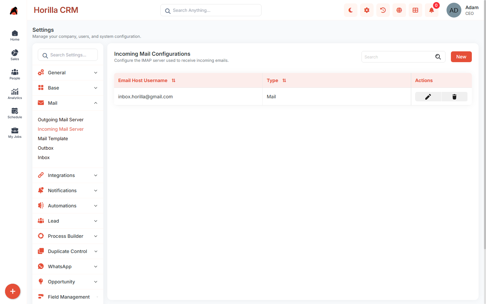
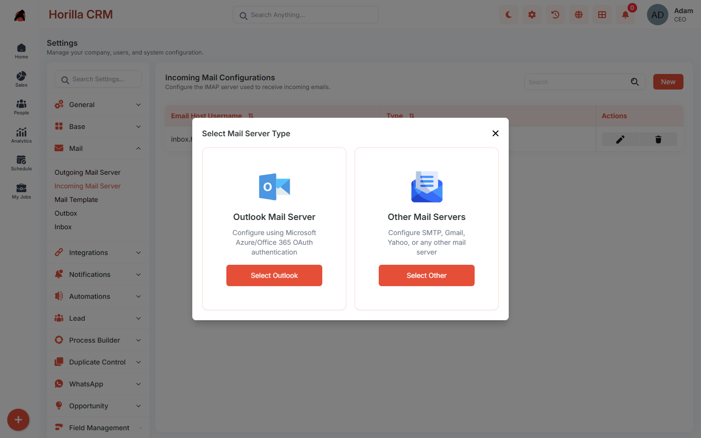
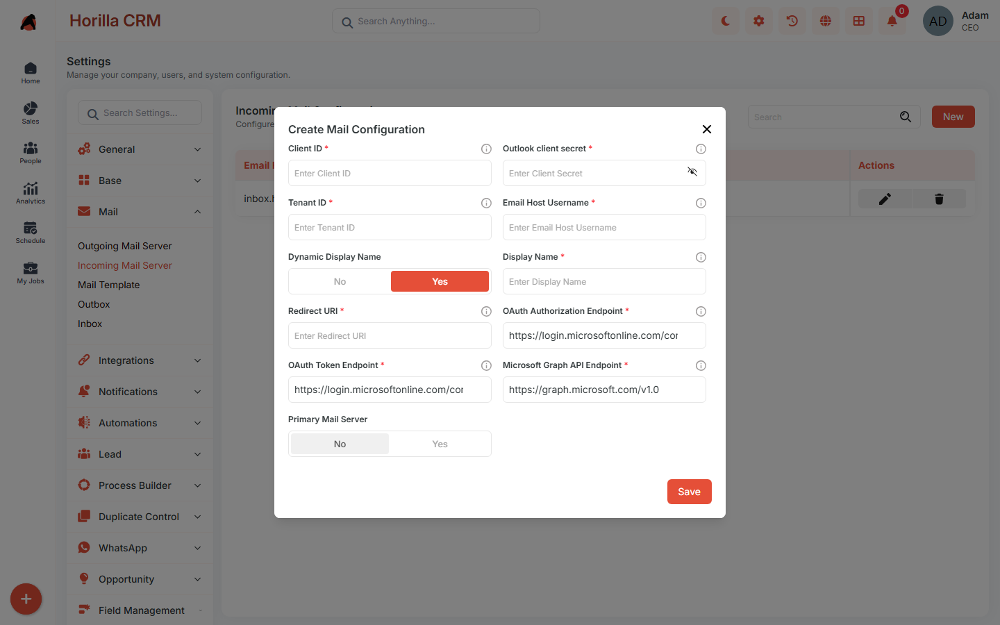
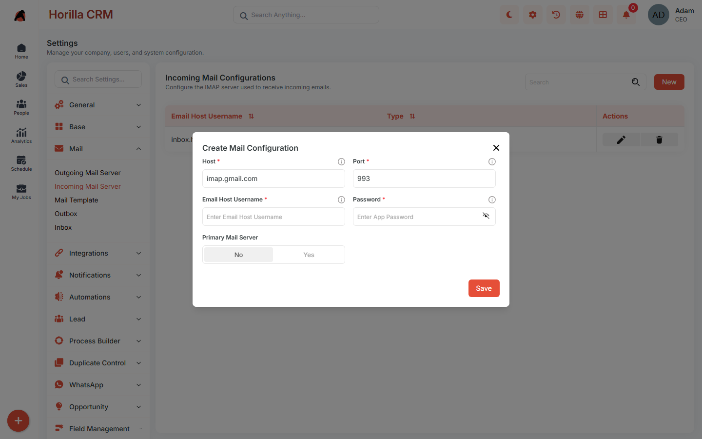

Introduction
The Incoming Mail Configuration module is where email server connections for receiving messages are set up and maintained. It supports Microsoft Outlook and Office 365 accounts through OAuth, and other mail servers through IMAP.
Several mail accounts can be configured for different purposes, so that inbound messages from leads, contacts and customers are handled from inside the CRM.
Key Features and Functionalities
1. Incoming Mail Configurations Overview
Purpose: list every configured incoming mail server in a single table.
- Navigate to Settings → Mail → Incoming Mail Server.
- The table shows three columns: Email Host Username (the receiving email address), Type (Outlook or Mail) and Actions (the management icons).
- A search box is available for locating a specific configuration.
- The Email Host Username and Type columns can be sorted using the indicators in their headers.

2. Creating a New Mail Configuration
Purpose: add a new incoming mail server.
- Click New.
-
The Select Mail Server Type dialog opens with two choices:
- Outlook Mail Server – for Microsoft Azure / Office 365 accounts using OAuth.
- Other Mail Servers – for IMAP, Gmail, Yahoo or other servers.
- Click Select Outlook or Select Other to continue to the matching form.

3. Configuring an Outlook Mail Server
Purpose: connect a Microsoft Outlook or Office 365 account using OAuth.
Choosing Outlook Mail Server opens the Create Mail Configuration form.

Authentication credentials
| Field | Description |
|---|---|
| Client ID | The application (client) identifier taken from Azure. |
| Outlook client secret | The secret created for the Azure application. |
| Tenant ID | The Azure directory (tenant) identifier. |
| Email Host Username | The email address that will receive the mail. |
| Display Name | The name shown for the account. |
| Redirect URI | The OAuth redirect address. |
Endpoints
These fields arrive pre-filled with default values:
| Endpoint | Default value |
|---|---|
| OAuth authorization endpoint | https://login.microsoftonline.com/cor |
| OAuth token endpoint | https://login.microsoftonline.com/cor |
| Microsoft Graph API endpoint | https://graph.microsoft.com/v1.0 |
Additional options
- Primary Mail Server toggle.
Click Save to store the configuration.
4. Configuring Other Mail Servers
Purpose: connect an IMAP-based server such as Gmail, Yahoo or a custom mail server.
Choosing Other Mail Servers opens the Create Mail Configuration form.

Fields
- Server connection details: Host, Port.
- Authentication: Email Host Username, Password.
- Additional options: the Primary Mail Server toggle, which marks this account as the default receiving account.
Click Save to store the configuration.
5. Managing Existing Configurations
Each row in the list carries action icons, which differ by server type:
- Outlook configurations: Refresh token, Login Outlook, Edit, Delete.
- Other mail server configurations: Edit, Delete.
Best Practices
- Configure at least one mail server before expecting the CRM to receive email.
- Mark one configuration as the Primary Mail Server so there is a default receiving account.
-
For Outlook, register the application in Azure AD beforehand and grant the
Mail.ReadandMail.ReadWritepermissions. -
For Gmail and similar providers: use an app-specific password rather than the main account
password, enable IMAP access in the provider's settings, and for Gmail use host
imap.gmail.comwith port993. - Make sure firewall and security settings allow incoming connections on the IMAP port.
- Store client secrets and passwords securely, revealing them only when needed.
- Refresh OAuth tokens regularly for Outlook configurations.
- Review the mail configurations periodically so they keep working and stay compliant with security requirements.